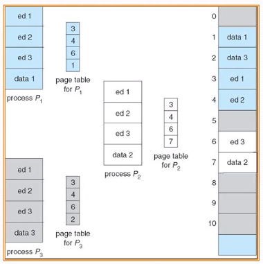

Memoria Caché
Administración de memoria

Son utilizados para propósitos lógicos, los cachés generales contienen un caché que contiene los descriptores de caché utilizados por el kernel, los cachés generales se inicializan con kmem_cache_init() y kmem_cache_sizes_init() durante la inicialización del sistema.

Por otro lado, los cachés específicos se crean mediante kmem_cache_create(). Para destruir un caché se llama a la función kmem_cache_destroy() que se encuentra en el archivo fuente.

Descriptores:Un descriptor de objetos es simplemente en entero (unsigned int), que tiene significado cuando el objeto está libre. Éste contiene el índice al siguiente objeto libre en el slab, implementando así una lista de objetos libres en el slab. El descriptor del objeto del último elemento de la lista de objetos libres se marca como BUFCLT_END (0xffffffff). Los objetos se asignan y se liberan mediante las funciones kmem_cache_alloc() y kmem_cache_free().
